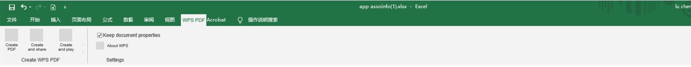
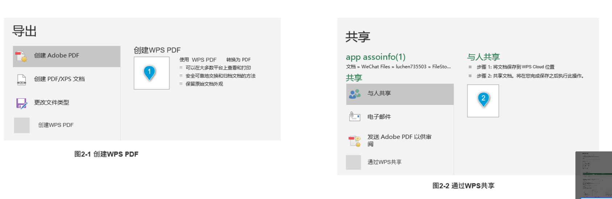
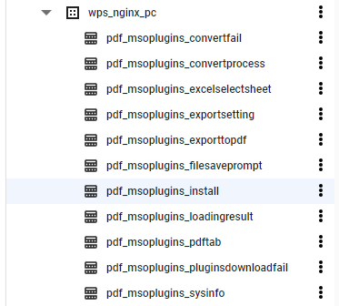
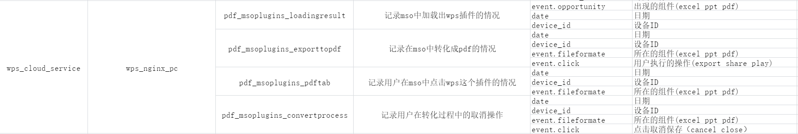

mso增加wps插件
平台
PC
需求描述
在微软office三件套中增加一个WPS插件，该插件主要可以将文档转化为PDF或者创建PDF。如 下图所示。

有三个create，分别是:
- create
- create and share
- create and play
增加曝光入口：

分别从导出以及共享来增加曝光。
取数日期
5月8日到5月28日
产品关注的指标
- 插件展现/整个日活
- 从插件启动WPS的占比
- 功能点击
关注的指标(分组件)
create
- uv
- 弹出文档未保存的uv
- 点击保存的uv
- 不保存的uv
- 插件启动uv
- 转化成功uv
- pdf文档打开的uv
create and share
- uv
- 弹出文档未保存的uv
- 点击保存的uv
- 不保存的uv
- 自定义路径-点击确定的uv
- 自定义路径-点击取消的uv
- 转化-取消的uv
- 转化-成功的uv
- pdf文档打开的uv
- pdf文档关闭的uv
- 点击分享的uv
- 分享成功的uv
- 作为email分享的uv
- 作为link分享的uv
- send email的uv
create and play
- uv
- 弹出文档未保存的uv
- 点击保存的uv
- 不保存的uv
- 自定义路径-点击确定的uv
- 自定义路径-点击取消的uv
- 转化成功uv
- pdf文档打开的uv
- pdf文档关闭的uv
- 播放uv
- 播放取消uv
导出
- 创建wps pdf的uv
转化路径
- 创建wps pdf
- 来源
- 头部导航栏
- create
- create and share
- create and play
- 文件->导出
- 头部导航栏
- 来源
- 分享
- 来源
- 头部导航栏
- create and share
- 文件->共享
- 头部导航栏
- 来源
相关数据表

- 数据表解释

其他
- sql中
count(1)与count(*)的区别。- count(1)排除了有null值的行。
- count(*)统计的是所有记录。